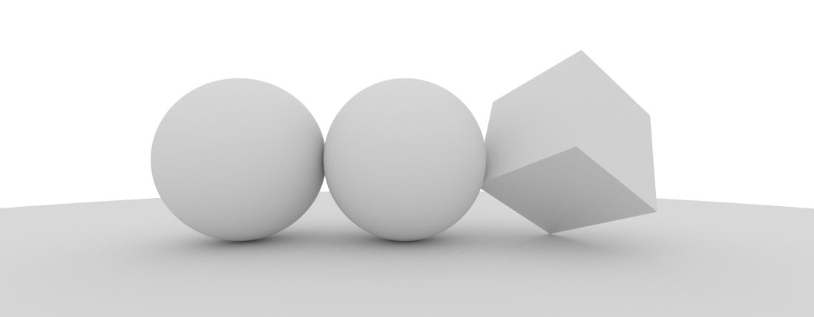
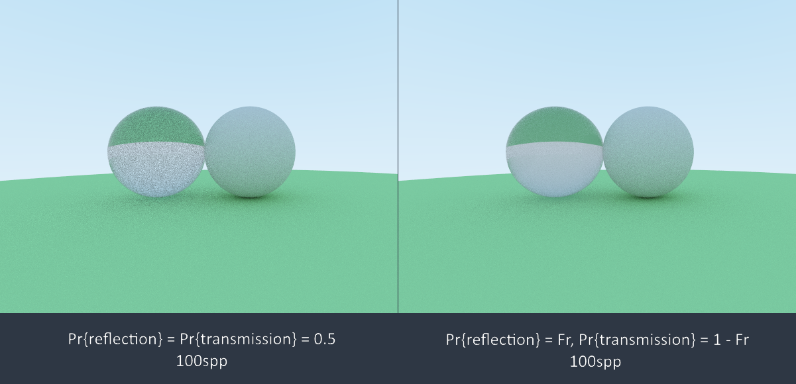
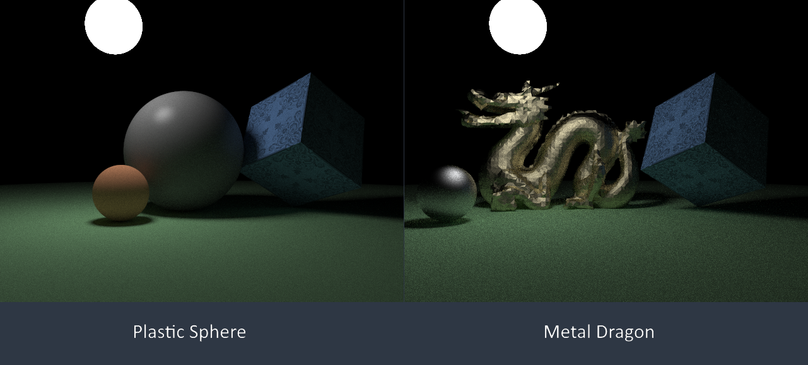

在实现了Multiple Importance Sampling后，我发现Atrc居然没有Glossy类型的材质，以至于我很难构造一个能够展现MIS技术优越性的场景。因此，下一步个小目标就是实现一个能用的材质系统了。
BSDF
BSDF的全称是Bidirectional Scattering Distribution Function，即双向散射分布函数。对场景中的某个物体表面的一点，设想从方向射来一束光，这束光必然被反射/折射向空间中的各个方向，而每个方向所分得的“比例”就是由BSDF描述的。
本文使用符号表示入射方向为时，处的材质将这些辐射量反射到方向的比例。严格地说，是出射辐射和入射照度之比：
根据Lambertian定律和与间的关系，有：
其中是处的表面法线。将表示成，再在各个可能的上积分，就得到了：
就是从其他地方照射到处，再散射向方向的辐射量了。如果再加上处本身的自发光，我们甚至可以立刻导出渲染方程：
考虑到大部分材料都是不透明的，其BSDF的非零范围仅限于表面法线方向的半立体角而已，我们可以把BSDF定义域中的方向限制到上，得到的函数称为Bidirection Reflectance Distribution Function，即双向反射分布函数，简记为BRDF，用符号表示。类似的定义还有描述折射的BTDF 等，这里不再赘述。
Perfect Diffuse Reflection
完美漫反射表面会将入射光均匀地反射到法线方向半立体角上的每一个方向，这样的材质在真实世界中应该是找不到的，但却是一种非常基本的“分量”，绝大部分材质的BRDF中都或多或少地包含了漫反射成分。
将“均匀反射到各个方向”形式化，就得到了下述公式：
也就是说是个常值函数。现在假设我希望有一个表面，它反射入射光的能量比例为，且反射到各方向的辐射都是相同的，则必然具有形式：
如何计算这个呢？设入射照度为，则出射照度为，据此：
联立解得
因此理想漫反射表面的BRDF为：
随便画个图意思一下：

Fresnel Formula
一束光照射到一个平滑表面时，有多大的比例被反射、折射或是吸收？我们的第一反应可能是给个反射系数/折射系数作为材质参数。但这个问题是可以从Maxwell方程组解出来的（好像还在《电磁场与波》这门课上解过……），若是凭感觉乱写，在真实感图形绘制中反倒落了下乘。
给定两种绝缘体介质，设光从折射率为的一侧照射到两种介质的（平滑）分界面上，另一侧介质的折射率为，若忽略入射和出射光可能带有的极化特征，反射光的占比为：
其中和分别是入射光和折射光与分界面在各自一侧的法线的夹角。这个公式过于复杂，在实践中最常用的其实是它的近似拟合版本，称为Schlick公式：
它在计算Specular反射的Fresnel因子时十分有效。由于下文介绍的Torrance-Sparrow微表面模型在某种意义上也是Specular反射，因此Schlick公式在那里也能使用。
导体的Fresnel系数计算依赖于一个更加一般的公式，其中导体本身的“折射率”以的复数形式给出，代表了材料对入射光的吸收率。设，入射角度为，则：
Perfect Specular Reflection
带有很多镜面反射的场景很适合用来展示光线追踪技术的威力，光栅化（在我的知识范围内）算法则无能为力。因此我以很高的优先度实现镜面反射。
一般材质会将从某个方向来的光反射到许多方向去，因此这些方向的反射量可以用分布函数来描述；而镜面反射将某个方向的入射光全部反射到另一个特定的方向上去，如果依然用分布函数来描述，会形成在上值为无限大，而在其他方向上值为零的尴尬情境。这样的情境下，我们称反射分布是一个奇异分布，并用函数来表示它。
此外，在使用BRDF来计算辐射值时，都会根据Lambertian定律在旁边乘上因子，这对理想镜面反射来说反而是画蛇添足了，因此在中我们得除一下它。最终的表达式是：
其中是之前提到的Fresnel项，是根据法线和入射方向计算镜面反射出射方向的函数，用初中物理学过的“入射角等于反射角”就能推出来（假设法线和方向向量都是归一化的）：
材质效果如下：
Perfect Specular Transmission
有了理想反射自然就要有理想折射，这两者凑在一起才能制作出玻璃钻石之类的特效。然而折射的天然特性使得它比反射更困难一些——
- 折射角和介质折射率有关，服从Snell定律
- 要考虑全反射
- 折射角的变化会“压缩”或“扩张”立体角微元，使得辐射值等比例地发生变化
首先是Snell定律，也是初中物理学过的：
据此可以根据入射角计算出折射角。当按此式计算出的时，就发生了全反射，使得折射量为零。
现在来计算入射辐射量和折射辐射量之间的关系。根据Fresnel公式，折射的能量在入射能量中占比满足：
对Snell定律两边求导易得：
代入上式可得：
这样一来，就能给出完整的BTDF了：
其中是按照Snell定律计算出的理想折射方向，易证明：
当然，发生全反射时，的值强制归零。
我想不出什么东西会只有折射没有反射，那样也太违和了，所以完美折射的例子就用玻璃球吧，即反射和折射的结合体。该材质每次采样时以一半的概率选择反射，以另一半的概率选择折射，并将计算结果乘二以达到无偏，效果如下方左侧所示：

这噪点不免也太多了点，得改进一下。注意到当入射光线和法线方向相近时，Fresnel项几乎是零，折射成分居多；而当入射光线和法线接近垂直时，Fresnel项几乎是一，反射成分居多。据此，在进行折射/反射的选择时，可以先计算出Fresnel项来，然后以的概率选择反射，这是重要性采样的思想。应用这一策略后的效果如上图右侧所示，和左边相比改善颇多。
需要注意的是，玻璃材质的反射项计算也需要判断是否发生了全反射，这一点是上面的Perfect Specular Reflection中没有考虑的。反射和折射是相当难以调试的材质，因为即使代码中有问题，往往也能呈现出很不错的效果。
Torrance-Sparrow Model
近年来，随着硬件性能的提升，微表面材质模型在实时渲染中名声大噪，作为PBR（physically based rendering）的主力模型，哪个3A大作都得来上一套。事实上，这些模型在离线渲染中的存在感更强，著名的Torrance-Sparrow模型比我上一辈人的年龄都大，本节就讨论它的一些应用。
微表面模型（Microfacet Model）假设物体表面有许许多多的被称为微表面（microfacet）的细小结构，它们在宏观上不可见，但也不至于小到光的波长量级，以至于影响我们使用几何光学来进行推导的程度。“宏观上不可见”的意思是我们所看到的物体表面点处的反射特性是由附近的大量微表面的统计性质决定的，因而我们不必去计算每个微表面的行为。特定的微表面模型往往会假设这些微表面具有某些特殊的形态，比如Oren–Nayar假设它们是“V”字形的漫反射表面，常用来对粗糙绝缘体表面建模；而本节的Torrance-Sparrow模型则假设微表面都是理想镜面，能很好地表现材质的高光特性，如较光滑的金属等。
本节中讨论的微表面模型假设微表面构成宏观表面上的一个高度场，即微表面中不含“洞穴”结构。
Microfacet Distribution Function
给定入射点、入射方向和出射方向，令：
此时令表示处法线位于内的微表面的面积和宏观表面面积之比，称为微表面分布函数。注意，这里的都是在点的（以为z轴的）局部坐标系中讨论。以理想镜面反射为例，如果我们从微表面的角度来看待它，那么所有的微表面都是平行于表面本身的，其是：
对处的面积微元，给定方向和它附近的立体角微元，则法线在内的微表面总面积为。这些微表面是朝向的，因此它们的面积投影到宏观表面上后就只剩下：
所有之和必须是宏观表面总面积，这就得到了的归一化约束：
来看个例子：上古时期的Blinn-Phong分布满足，将右侧归一化，就得到了实际使用的分布函数：
另外一个常用的分布是Beckmann–Spizzichino分布（这个式子是PBRT上看来的，我是真不知道咋来的）：
设为微表面斜率的均方根，则。
最后再记一个Trowbridge-Reitz分布，也是PBRT上的，对此我表示放弃治疗：
其中是与的夹角，是的极坐标表示中的水平旋转角分量。这样写着实方便，以后就用来表示方向好了。
Geometry Attenuation Factor
就算微表面中不存在洞穴结构，相近的微表面之间也可能会形成遮蔽，进而使得部分朝向正确的微表面无法为反射做出贡献。我们用来表示从角度看时，法线为的微表面中有多大比例能够幸运地免于被挡住，称它为Smith遮蔽阴影函数（Smith’s Masking-Shadowing Function）。
给定出的宏观面积微元，并从角度去看它，那么看到的面积其实是。法线与夹角不超过的微表面只要没被遮住，都应该可以被看到。现给定附近的立体角微元，若和夹角小于，则法线在中的微表面被看到的面积为：
对所有这样的积分，就得到了从角度看到的微表面总面积，这肯定等于，于是我们推出了的归一化条件：
如果的值仅与有关而和无关，那么可以把它简写为，而这正是图形学一般所使用的假设。至于这个假设有什么道理，emmm，不知道。
每一块被遮蔽的面朝我们的微表面，都一定对应着一块遮蔽它的背对我们的微表面，而且它们在方向上的投影面积是相等的。我们把法线和夹角小于的微表面在方向的投影面积为，称其他微表面在上的投影面积为，就可以用这两个量表示出来：
现令：
那么和间的关系是：
一般来说，给出的信息量不足以让我们是推出，但如果假设表面上相邻两点间的高度不相关（这个假设看起来简直扯淡，但验证表明它实际造成的影响小得可以忽略不计，只是我们很难严格地分析），就可以推出一些对应的。Beckmann–Spizzichino分布的为：
其中。
同样地，可以推出Trowbridge–Reitz分布的是：
还不能完全满足要求——我们的最终目的是给定和，求出没有被遮蔽的光线比例。如果和之间是相互独立的，那么就是它们的乘积，但现实中它们之间往往相关，乘积会过低地估计实际的遮蔽值。目前被广泛使用的一个构造是：
需要注意的是，该式只是一个非常符合实际测量结果的结果，就好比Schlick公式一样。理论上的确有更为精密、严谨的，但那又过于复杂，以至于使用不便。
Torrance-Sparrow Framework
有了微表面分布函数和几何遮蔽函数，我们还需要一个把他们整合起来形成BRDF的式子。之前提到过，我们假设所有的微表面都是理想镜面，于是对入射方向和出射方向，设入射光辐射为，考虑到只有法线为的微表面才能为BRDF值做出贡献，有效的入射光通量为：
于是出射能量为：
根据定义，出射辐射为：
联立以上三式，解得：
式中的与之间有如下关系：
这个式子的由来我会专门写篇博客来讲，它本身倒不值什么篇幅，但我要好好批判一番查证它的过程中遇到的坑，气得我都想挂人了。总之我们把给换成，乘上一个几何项，就得到了：
将代入上式，终于得到BRDF形式了：
本文所讨论的微表面模型只不过是Torrance-Sparrow框架下的冰山一角，关于更多和的选取可参考这里。
Show Time
在实践中，我们可以测量物体表面的反射特性，然后用上述模型去拟合，从而得到合理的模型参数，这些就不是本文所能讨论的了。下面我将漫反射和高光反射叠加起来，通过控制两者的比例以及Fresnel项的类型，很容易得到塑料或金属质感的表面：
